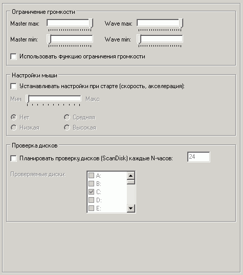

Обслуживание: Прочие

Наиболее важные опции на этой вкладке:
Ограничение громкости
Можно использовать функцию ограничения громкости в целях защиты и удобства.
В данной версии Runpad Shell опция не будет работать в Windows Vista/7